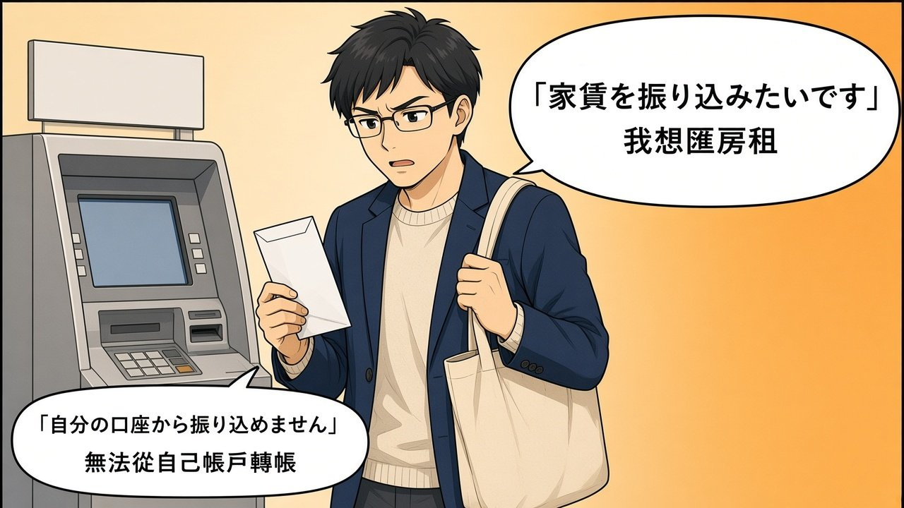
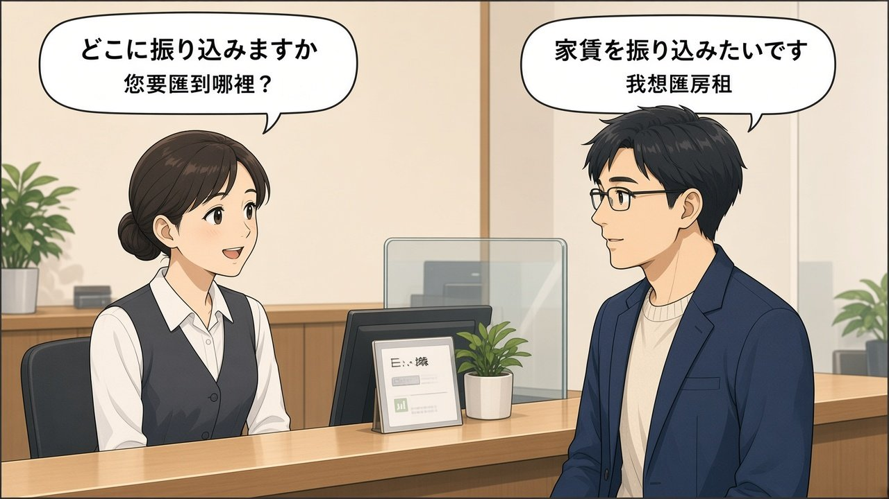
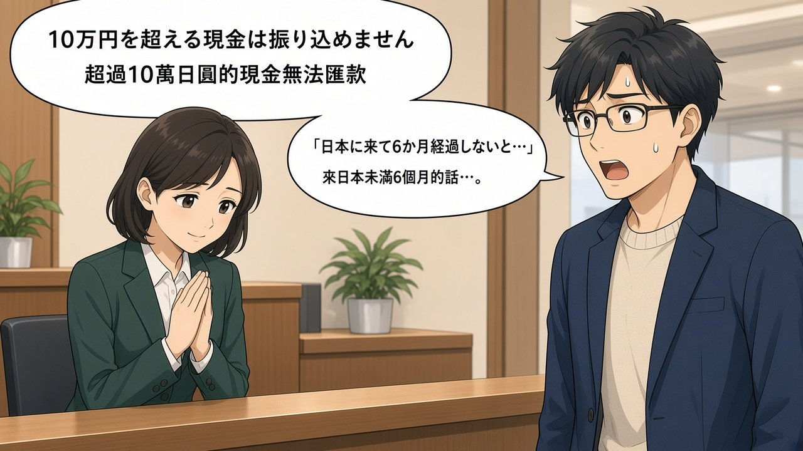
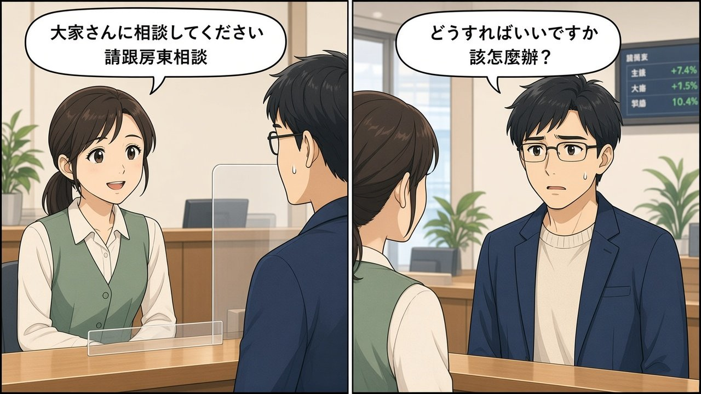
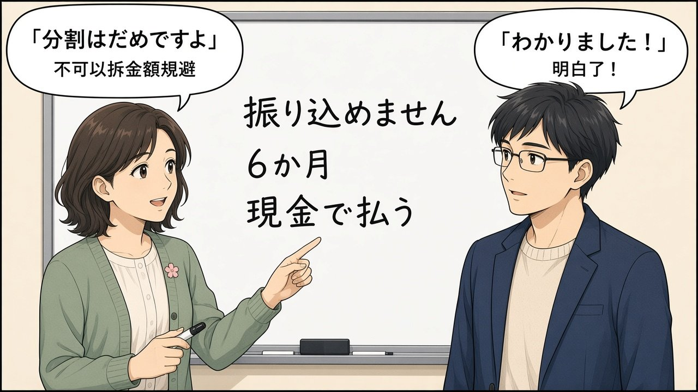

11/04 「銀行に行く」振込・口座・家賃
今天辛苦了！這是生活日語 special（不是教科書某一課）。一句話重點：想匯房租說 家賃を振り込みたいです；櫃檯常問 どこに振り込みますか、在留カードありますか、日本にはいつ来ましたか。來日未滿約 6か月時，許多銀行對 10万円を超える現金的匯款會說 振り込めません → 大家さんに相談してください。合法做法：当面現金、申請 口座振替、或滿 6 個月後從自己帳戶匯。不要拆成小額規避。迷路用語：東口はどこですか／まっすぐ／左に曲がる。
📖 漫畫版上線｜12 頁日漫把銀行匯房租整段講完（迷子・窓口・在留カード・10万円／6か月・現金払い）
主角ハルト（神樂坂附近新生・虛構）× 銀行員 × ミキ先生。每頁圖下有 ▶ 播放／⧉ 複製／日語／羅馬拼音／中文。
打開完整漫畫版 →
從 P01 開始
漫畫複習：ハルト去銀行匯房租
📖 想看完整 12 頁日漫？請打開
漫畫版專頁。下面保留 6 格速覽。
主角是剛搬到東京・神樂坂附近、來語言學校讀書的約 37 歲男性（頁面上只叫「ハルト／主角」，不是任何人的肖像）。銀行無品牌、金額／帳戶皆虛構或省略。氣泡字若糊掉，請看圖下日語列。
① 想匯房租，自己帳戶轉不了 → 提現金

自己銀行的 App／ATM 不讓轉帳，只好提現金去別家窗口。
家賃を振り込みたいです。 | yachin o furikomitai desu. | 我想匯房租。 | say=やちんをふりこみたいです。
自分の口座から振り込めません。 | jibun no kouza kara furikomemasen. | 無法從自己帳戶轉帳。 | say=じぶんのこうざからふりこめません。
生活中怎麼用：〜たいです＝想要。振り込めません＝無法匯（當作固定說法記）。EN: I want to transfer the rent. 泰: อยากโอนค่าเช่า。
② 池袋迷路：東口／西口
找銀行時搞混東口和西口。
東口はどこですか。 | higashi guchi wa doko desu ka. | 東口在哪裡？ | say=ひがしぐちはどこですか。
まっすぐ行って、左に曲がってください。 | massugu itte, hidari ni magatte kudasai. | 請直走再向左轉。 | say=まっすぐいって、ひだりにまがってください。
③ 櫃檯：您要匯到哪裡？

銀行員標準問句。
どこに振り込みますか。 | doko ni furikomimasu ka. | 您要匯到哪裡？ | sp=銀行員;say=どこにふりこみますか。
家賃を振り込みたいです。 | yachin o furikomitai desu. | 我想匯房租。 | sp=ハルト;say=やちんをふりこみたいです。
④ 超過 10 萬現金無法匯／未滿 6 個月

洗錢防制相關規定：新住民常被拒大額現金匯款。
10万円を超える現金は振り込めません。 | juuman en o koeru genkin wa furikomemasen. | 超過 10 萬日圓的現金無法匯款。 | sp=銀行員;say=じゅうまんえんをこえるげんきんはふりこめません。
日本に来て6か月経過しないと…。 | nihon ni kite rokkagetsu keika shinai to... | 來日本未滿 6 個月的話…… | sp=銀行員;say=にほんにきてろっかげつけいかしないと。
⑤ 請跟房東商量

櫃檯給的下一步：跟房東談当面付現金等方案。
どうすればいいですか。 | dou sureba ii desu ka. | 該怎麼辦才好？ | sp=ハルト;say=どうすればいいですか。
大家さんに相談してください。 | ooyasan ni soudan shite kudasai. | 請跟房東商量。 | sp=銀行員;say=おおやさんにそうだんしてください。
⑥ ミキ先生提醒：不要拆金額規避

合法選項：現金当面、口座振替、滿 6 個月後自己帳戶匯。
分割はだめですよ。 | bunkatsu wa dame desu yo. | 不可以拆金額規避喔。 | sp=ミキ;say=ぶんかつはだめですよ。
わかりました！ | wakarimashita! | 明白了！ | sp=ハルト;say=わかりました
現金で払います。 | genkin de haraimasu. | 我用現金付。 | say=げんきんではらいます。
銀行・匯款單字
ぎんこう | 銀行 | ginkou | 銀行 | 銀＝錢行
こうざ | 口座 | kouza | 帳戶 | 口＋座
こうざばんごう | 口座番号 | kouza bangou | 帳號
こうざめいぎ | 口座名義 | kouza meigi | 帳戶戶名（常片假名）
してんめい | 支店名 | shiten mei | 分行名稱
ふつう | 普通 | futsuu | 普通（存款帳戶種類）
ふりこみ | 振込 | furikomi | 匯款／轉帳給別人
ふりかえ | 振替 | furikae | 帳戶間調動
こうざふりかえ | 口座振替 | kouza furikae | 帳戶自動扣款
そうきん | 送金 | soukin | 匯款／送錢
げんきん | 現金 | genkin | 現金
ひきだし | 引き出し | hikidashi | 提款
あずけいれ | 預け入れ | azukeire | 存款
ざんだか | 残高 | zandaka | 餘額
てすうりょう | 手数料 | tesuuryou | 手續費
げんどがく | 限度額 | gendogaku | 限額
ほんにんかくにん | 本人確認 | honnin kakunin | 本人確認
まどぐち | 窓口 | madoguchi | 櫃檯窗口
せいりけん | 整理券 | seiriken | 號碼牌
ようし | 用紙 | youshi | 表格用紙
きにゅう | 記入 | kinyuu | 填寫
あんしょうばんごう | 暗証番号 | anshou bangou | PIN／密碼
つうちょう | 通帳 | tsuuchou | 存摺
きゃっしゅかーど | キャッシュカード | kyasshu ka-do | 提款卡
ざいりゅうかーど | 在留カード | zairyuu ka-do | 在留卡
いんかん | 印鑑 | inkan | 印章
さいん | サイン | sain | 簽名
やちん | 家賃 | yachin | 房租
おおやさん | 大家さん | ooyasan | 房東
かんりがいしゃ | 管理会社 | kanri gaisha | 管理公司
ひがしぐち | 東口 | higashi guchi | 東口
にしぐち | 西口 | nishi guchi | 西口
まっすぐ | まっすぐ | massugu | 直走
ひだりにまがる | 左に曲がる | hidari ni magaru | 向左轉
記法
- 粵振込＝「振＋入」匯入；振替＝「替」換帳。東口＝東＋口（出口）。
- 普口座＝帳戶；手数料＝手續費；限度額＝上限金額。
- ENfurikomi＝send to someone else；furikae／kouza furikae＝transfer／auto-debit；zairyuu card＝residence card。
- 泰振込＝โอนเงิน；現金＝เงินสด；大家さん＝เจ้าของบ้าน；東口＝ทางออกฝั่งตะวันออก。
ATM 按鈕（要認得）
お振込み | おふりこみ | ofurikomi | 匯款
お引き出し | おひきだし | ohikidashi | 提款
お預け入れ | おあずけいれ | oazukeire | 存款
確認 | かくにん | kakunin | 確認
取消 | とりけし | torikeshi | 取消
明細書 | めいさいしょ | meisaisho | 明細／收據
學習者常用句
振込をしたいです。 | furikomi o shitai desu. | 我想辦匯款。 | say=ふりこみをしたいです。
家賃を振り込みたいです。 | yachin o furikomitai desu. | 我想匯房租。 | say=やちんをふりこみたいです。
口座を作りたいです。 | kouza o tsukuritai desu. | 我想開戶。 | say=こうざをつくりたいです。
自分の口座から振り込めますか。 | jibun no kouza kara furikomemasu ka. | 能從自己帳戶匯嗎？ | say=じぶんのこうざからふりこめますか。
限度額はいくらですか。 | gendogaku wa ikura desu ka. | 限額是多少？ | say=げんどがくはいくらですか。
いつからできますか。 | itsu kara dekimasu ka. | 什麼時候開始可以？ | say=いつからできますか。
どうすればいいですか。 | dou sureba ii desu ka. | 該怎麼辦？ | say=どうすればいいですか。
もう一度ゆっくりお願いします。 | mou ichido yukkuri onegaishimasu. | 請再說一次、慢一點。 | say=もういちどゆっくりおねがいします。
すみません、日本語がまだ下手です。 | sumimasen, nihongo ga mada heta desu. | 不好意思，日語還不太行。 | say=すみません、にほんごがまだへたです。
英語は大丈夫ですか。 | eigo wa daijoubu desu ka. | 英語可以嗎？ | say=えいごはだいじょうぶですか。
櫃檯真實句（要聽懂）
どこに振り込みますか。 | doko ni furikomimasu ka. | 您要匯到哪裡？ | sp=銀行員;say=どこにふりこみますか。
在留カードありますか。 | zairyuu ka-do arimasu ka. | 有在留卡嗎？ | sp=銀行員;say=ざいりゅうカードありますか。
日本にはいつ来ましたか。 | nihon ni wa itsu kimashita ka. | 您什麼時候來日本的？ | sp=銀行員;say=にほんにはいつきましたか。
先月来ました。 | sengetsu kimashita. | 上個月來的。 | sp=ハルト;say=せんげつきました。
10万円を超える現金は振り込めません。 | juuman en o koeru genkin wa furikomemasen. | 超過 10 萬日圓的現金無法匯款。 | sp=銀行員;say=じゅうまんえんをこえるげんきんはふりこめません。
日本に来て6か月経過しないと…。 | nihon ni kite rokkagetsu keika shinai to... | 來日本未滿 6 個月的話…… | sp=銀行員;say=にほんにきてろっかげつけいかしないと。
大家さんに相談してください。 | ooyasan ni soudan shite kudasai. | 請跟房東商量。 | sp=銀行員;say=おおやさんにそうだんしてください。
窓口對話（整理版）
振込をしたいです。 | furikomi o shitai desu. | 我想辦匯款。 | sp=ハルト;say=ふりこみをしたいです。
どこに振り込みますか。 | doko ni furikomimasu ka. | 您要匯到哪裡？ | sp=銀行員;say=どこにふりこみますか。
家賃を振り込みたいです。 | yachin o furikomitai desu. | 我想匯房租。 | sp=ハルト;say=やちんをふりこみたいです。
在留カードありますか。 | zairyuu ka-do arimasu ka. | 有在留卡嗎？ | sp=銀行員;say=ざいりゅうカードありますか。
はい、あります。 | hai, arimasu. | 有的。 | sp=ハルト
日本にはいつ来ましたか。 | nihon ni wa itsu kimashita ka. | 什麼時候來日本的？ | sp=銀行員;say=にほんにはいつきましたか。
先月来ました。 | sengetsu kimashita. | 上個月來的。 | sp=ハルト;say=せんげつきました。
10万円を超える現金は振り込めません。 | juuman en o koeru genkin wa furikomemasen. | 超過 10 萬現金無法匯。 | sp=銀行員;say=じゅうまんえんをこえるげんきんはふりこめません。
どうすればいいですか。 | dou sureba ii desu ka. | 該怎麼辦？ | sp=ハルト;say=どうすればいいですか。
大家さんに相談してください。 | ooyasan ni soudan shite kudasai. | 請跟房東商量。 | sp=銀行員;say=おおやさんにそうだんしてください。
わかりました。 | wakarimashita. | 明白了。 | sp=ハルト;say=わかりました。
文法連結（初級已學）
- 〜たいです：想要做……（振り込みたいです／口座を作りたいです）。EN: want to〜. 泰: อยาก…
- 振り込めません：先當固定說法＝「無法匯款」（可能形否定）。EN: cannot transfer. 泰: โอนไม่ได้
- 〜てください：請……（記入してください／相談してください／もう一度ゆっくりお願いします）。
- いつ／どこ：いつ来ましたか；どこに振り込みますか；東口はどこですか。
- に vs で：銀行で振り込みます（在銀行這個場所做動作＝で）；大家さんに払います（付給對象＝に）。物の存在仍用〔場所〕に〔N〕があります。
- 〜ませんか：邀請用法今天次要；櫃檯問句多用マスか／ありますか。
銀行で振り込みます。 | ginkou de furikomimasu. | 在銀行匯款。 | say=ぎんこうでふりこみます。
大家さんに払います。 | ooyasan ni haraimasu. | 付給房東。 | say=おおやさんにはらいます。
銀行にATMがあります。 | ginkou ni eitiiemu ga arimasu. | 銀行裡有 ATM。 | say=ぎんこうにATMがあります。
文化筆記：10万円・6か月
為什麼被拒？日本防洗錢（AML）規定：大額現金匯款要嚴格本人確認。許多銀行把來日未滿約 6 個月的人當「非居住者」嚴格處理，窗口現金超過 10万円常直接 振り込めません。
可以怎麼做（合法）：
- 当面用現金付給大家さん／管理会社。
- 拜託房東設定 口座振替（自動扣款；條件因銀行／契約而異）。
- 滿約 6 個月後，從自己帳戶用 App／ATM／窓口一般振込。
不要做：把金額拆成多筆小額來「繞過」10 萬限制——這可能觸法／違約，本站不教、不建議。
迷路：東口／西口
東口だから。 | higashi guchi dakara. | 因為是東口。 | say=ひがしぐちだから。
東口はどこですか。 | higashi guchi wa doko desu ka. | 東口在哪裡？ | say=ひがしぐちはどこですか。
西口はどこですか。 | nishi guchi wa doko desu ka. | 西口在哪裡？ | say=にしぐちはどこですか。
まっすぐ行ってください。 | massugu itte kudasai. | 請直走。 | say=まっすぐいってください。
左に曲がってください。 | hidari ni magatte kudasai. | 請向左轉。 | say=ひだりにまがってください。
右に曲がってください。 | migi ni magatte kudasai. | 請向右轉。 | say=みぎにまがってください。
記法
- 粵東口＝東邊個出口；西口＝西邊。
- 普higashi＝東（想「吉他」東邊）；nishi＝西（你洗）。
- ENHi to the rising sun＝ひがし；West＝にし。
- 泰東＝ตะวันออก／higashi；西＝ตะวันตก／nishi；ตรงไป＝まっすぐ。
易錯點
✗ 銀行に振り込みます（想說「在銀行辦」）✓ 銀行で振り込みますginkou de furikomimasu
動作場所＝で
✗ 大家さんで払います✓ 大家さんに払いますooyasan ni haraimasu
付給對象＝に
✗ 振替したい（房租匯給房東）✓ 振込をしたいです／振り込みたいですfurikomi o shitai desu
給別人＝振込；口座振替＝自動扣
拆成好幾筆小於 10 萬去匯✓ 現金で払う／口座振替／6か月後genkin de harau
不要規避
總考試 20 題（三條命）
有 🔊 的是聽力題。三條命用完就結束，最後列出錯題，可以一鍵複製。
今天的重點・複習・15 分鐘
📌 今天的重點
- 振り込みたいです；どこに振り込みますか；在留カード／いつ来ましたか。
- 10万円超現金＋來日未滿約 6か月 → 振り込めません → 大家さんに相談。
- 振込 ≠ 振替（口座振替＝自動扣款）；ATM：引き出し／預け入れ／確認／取消。
- 銀行で／大家さんに；東口・西口・まっすぐ・曲がる。
⏰ 複習提醒
- 這是生活日語 special，沒有教科書作業答案區。
- 建議把「櫃檯真實句」跟讀 2 遍，再玩 ATM／振込 vs 振替遊戲。
- 真的去銀行時：帶在留卡、慢慢說「もう一度ゆっくりお願いします」。
⏱ 15 分鐘複習法
- 0–5 分：單字格子＋ATM 按鈕各念一遍。
- 5–10 分：🎧 跟讀窓口對話。
- 10–15 分：小遊戲＋自己說 3 句「たいです」銀行句。